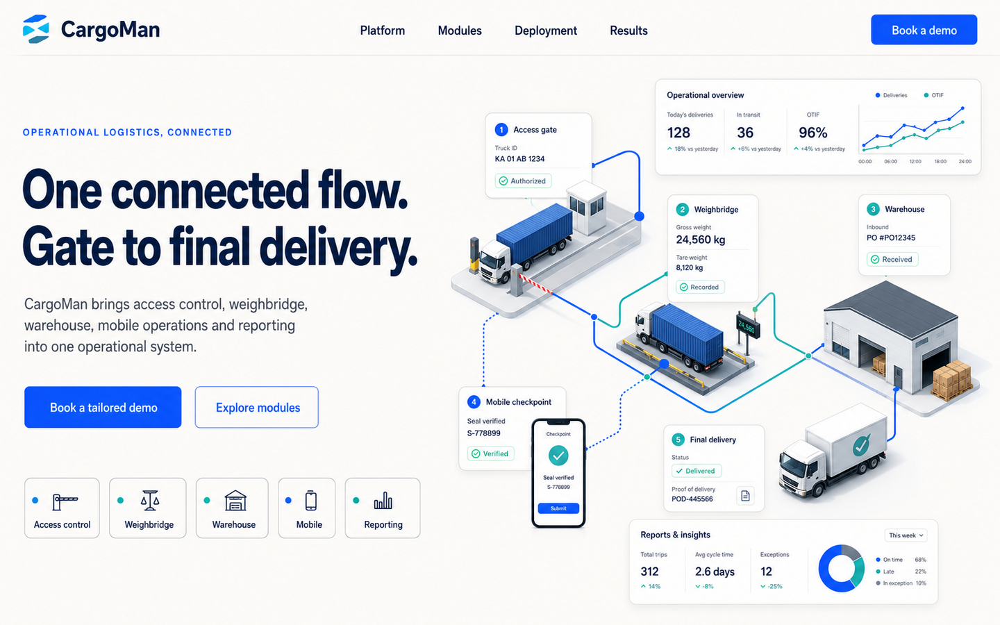

Logistics execution platform
Control every cargo movement, from gate to dispatch.
CargoMan connects gate control, weighbridge operations, warehouse workflows, mobile teams, evidence, and reporting in one logistics execution platform.

Illustrative graphic — the CargoMan journey from gate to dispatch
One platform across the movement
The same record, from first arrival to final dispatch.
Every stage below writes to one connected operational record — not several separate systems that need reconciling at month end.
Plan the movement
Orders, booking references, cargo detail and expected trucks, captured before the vehicle arrives.
Control arrival
Identify vehicle, driver, transporter and client, and record entry and security checks at the gate.
Capture weight
Process weighbridge transactions, prevent duplicate tickets, and link readings to the right record.
Receive & handle
Scan barcodes, allocate lots and orders, and record quantities, weights and damages.
Store & pack
Allocate warehouse zones, control stock status, and manage packing workflows through to release.
Release & dispatch
Validate the movement, confirm items, capture final weights or container status, and record exit.
Monitor & report
Live status, stock balances, throughput and audit history — with the transaction evidence behind it.
Not every deployment uses every stage — CargoMan is configured around the operation, not the other way around.
Core solutions
Six connected modules. One operational record.
Gate & access control
Match expected movements, record arrivals and entry, and maintain a clear view of vehicles and people on site.
See gate controlWeighbridge operations
Connect accurate weight capture to the right vehicle, cargo, order, and transaction.
See weighbridgeWarehouse & stock
Control receiving, storage, packing, and dispatch with order-, lot-, item-, and barcode-level traceability.
See warehouseContainer lifecycle
Track configurable container movements, packed cargo, seals, vehicles, photos, and signatures in one history.
See containersMobile & offline execution
Put scan-first capture, validation, photos, damages, and signatures in the hands of the operating team.
See mobileReporting & integration
Turn operational records into dashboards, documents, exports, and controlled data exchange.
See reportingTraceability & evidence
Know what happened — and prove it.
Photos, signatures, damage notes and documents attach to the transaction itself — not a separate evidence trail that has to be reassembled later.
- Item-, lot-, order-, and barcode-level chain of custody
- Transaction history across the full item lifecycle
- Damage classification, notes, and supporting documents
- Evidence retrieval built for investigation and dispute handling
Mobile & offline capture
Operations continue where the work happens.
CargoMan is built for gates, yards and warehouse floors — not just reliable office networks. Supported workflows are offline-capable and synchronise with the central platform when connectivity becomes available.
- Scan-first receiving, packing, and dispatch transactions
- Mandatory or contextual photo and signature capture
- Local operational data supports continued work on site
- Conflict handling protects server truth on sync
Management visibility
From live status to the underlying evidence.
Move from a dashboard view straight down to the transaction, photo, or signature behind it. Filter, export, and report without leaving the platform.
- Live and historical dashboards
- Stock movement and order balances
- Throughput, site occupancy, and turnaround
- Full audit history behind every figure
Configuration & integration
Your operation is connected. Your systems can be too.
CargoMan fits into the environment around it through controlled permissions, configurable workflows, and multiple integration options.
Authenticated, filterable querying for retrieving operational records.
Purpose-built endpoints for business processes that don't fit a generic data query.
Token-secured integration users, scoped to what each system needs to see.
SQL views where database-level reporting or data exchange is the best fit.
Industries
Built for real cargo sites.
Terminals & depots
Coordinate trucks, cargo, weighing, storage, and dispatch through one connected workflow.
Warehouses
Maintain item, lot, order, and evidence-based control from receiving through to dispatch.
Mining logistics
Track expected movements, origin data, weights, and site handovers with a clear record.
Container operations
Connect container events to cargo, trucks, seals, photos, and signatures in one history.
Talk to CargoMan
Let's map CargoMan to your operation.
Show us how cargo moves through your site, and we'll demonstrate how CargoMan can connect the process.